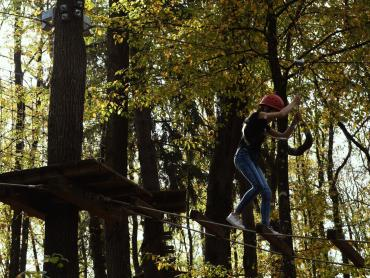
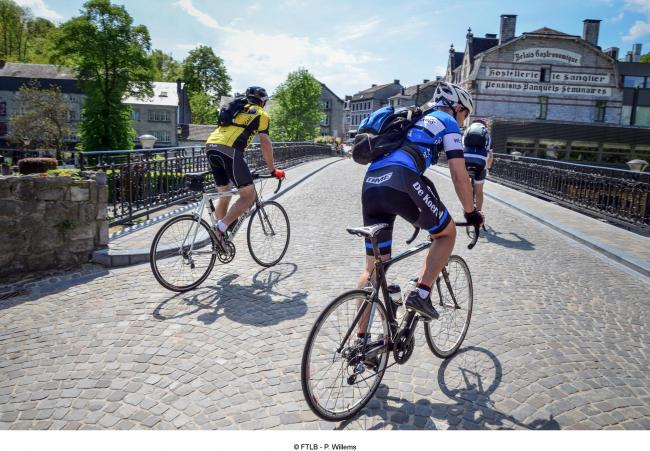
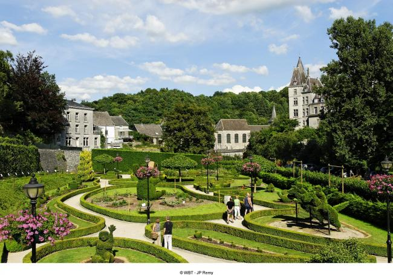
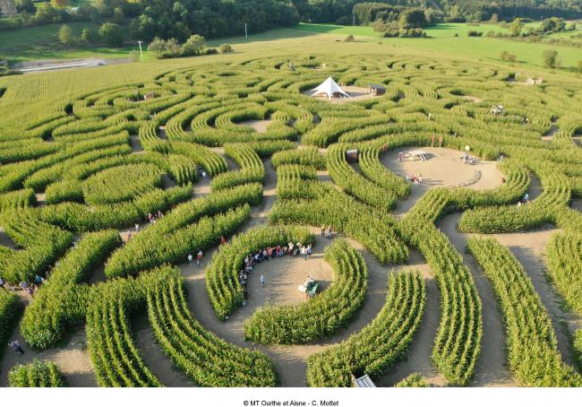
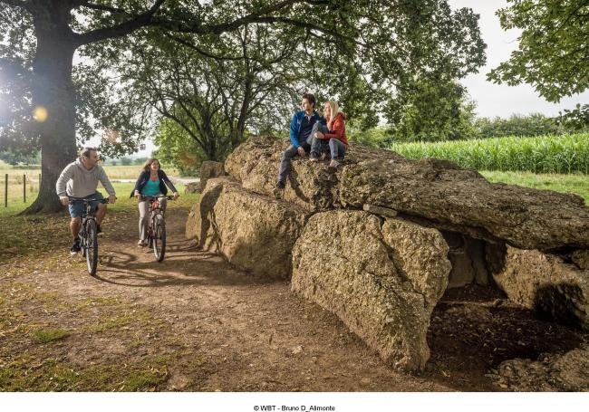
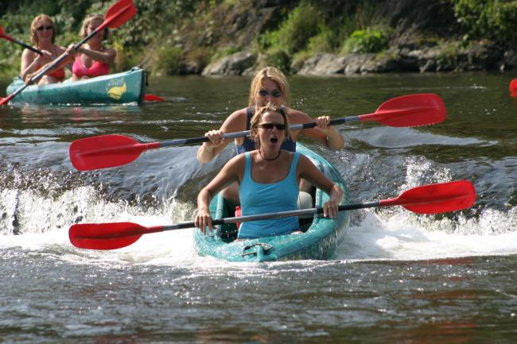
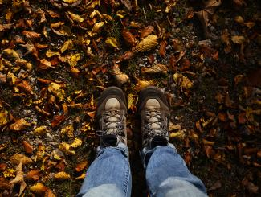
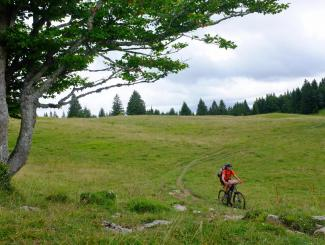
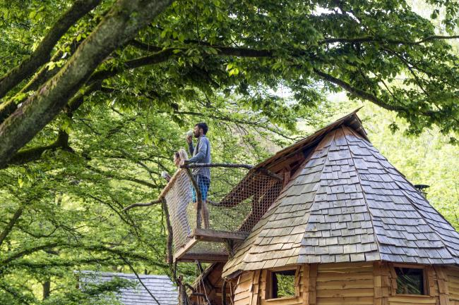

Adventure Valley
Kajak, klimmen, tokkelbanen en avonturenparcours: dé reden waarom families voor Durbuy kiezen. Reserveer in het hoogseizoen vooraf.
Ardennen · Hoogtepunten
De kleinste stad ter wereld, in de Belgische Ardennen — kasseien en grijze leistenen daken in een bocht van de Ourthe, met het grootste avonturenpark van het land om de hoek.
Niet te missen

Kajak, klimmen, tokkelbanen en avonturenparcours: dé reden waarom families voor Durbuy kiezen. Reserveer in het hoogseizoen vooraf.

Smalle kasseistraatjes, ambachtelijke winkeltjes en terrassen aan de Ourthe — het hele historische hart verken je te voet in een halve dag.

Honderden in vorm gesnoeide buksbomen, met uitzicht op de stad en de rots erboven.

Elke zomer een nieuw doolhof in de maïsvelden van buurdorp Barvaux — een klassieker met kinderen.

Het megalietenveld van Wéris en de uitkijkpunten boven de Ourthevallei: het mooiste licht krijg je vroeg of laat op de dag.
Wat te doen

Instappen bij Durbuy of Barvaux en de vallei vanaf het water zien.


De Ourthevallei is een van de mooiste instappunten van het knooppuntennetwerk.
Praktisch
Durbuy dankt de bijnaam aan zijn middeleeuwse stadsrechten: een volwaardige stad in oppervlakte nauwelijks groter dan een dorp. De titel is een knipoog — maar wie door het historische hart loopt, begrijpt hem meteen.
Adventure Valley voor actie, de oude stad en het Parc des Topiaires voor sfeer, het labyrint van Barvaux met kinderen, en kajakken of wandelen in de Ourthevallei. Reken op een vol weekend.
De zomer is de levendigste (en drukste) periode. Het voor- en najaar zijn rustiger en even mooi — en in december kleurt de stad in kerstsfeer.
Parkeer- en marktinformatie wordt in de definitieve pagina aangevuld door de redactie van VisitArdenne.

Blijven slapen
Rond Durbuy slaap je in boomhutten, boshutten en cabanes midden in het groen. Wij inspireren — boeken doe je rechtstreeks bij de gastheer of -vrouw.